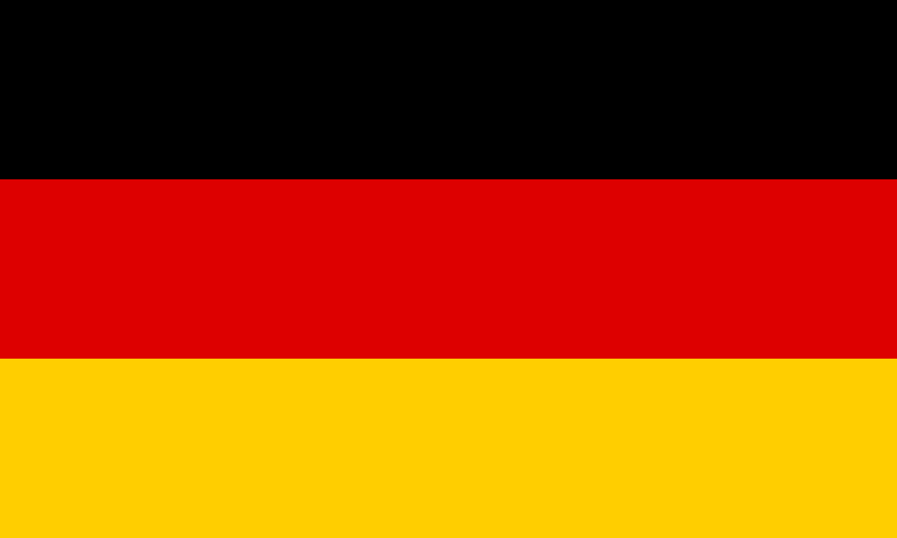

POLITICKÉ ZŘÍZENÍ, KLIMA
Politické zřízení
Spolková republika Německo (něm. Bundesrepublik Deutschland) je středoevropský stát, rozdělený na 16 spolkových zemí. Na západě sousedí Německo s Francií, Lucemburskem, Belgií a Nizozemskem. Na severu je jeho sousedem Dánsko a jeho břehy jsou omývány Severním a Baltským mořem. Na východě sousedí s Polskem, na jihu se Švýcarskem a na jihovýchodě s Českem a Rakouskem. Česko je sousedem dvou spolkových zemí v Německu, a to Bavorska a Saska.
Německo je federativní a demokratickou parlamentní republikou, tvořenou šestnácti spolkovými zeměmi (Bundesländer). Hlavním a zároveň i největším městem je Berlín. Německo je členským státem OSN, NATO, uskupení G8 (resp. G7) a signatářem Kjótského protokolu.
Rozloha Německa je 357 023 km2, přičemž území státu se nachází v mírném podnebním pásmu. Podle úředních údajů mělo Německo k 31. prosinci 2015 82,2 milionu obyvatel, což z něj činí nejlidnatější stát Evropské unie. Jeho populace ale již v letech 2003 až 2010 klesla kvůli dlouhodobě velmi nízké porodnosti, a to o skoro 800 000 obyvatel, takže až do roku 2012 bylo Německo jednou z mála západoevropských zemí s úbytkem obyvatelstva. Tento vývoj probíhá navzdory tomu, že Německo je zároveň domovem třetí největší populace imigrantů na světě. Výsledek sčítání lidu 2011 znamenal snížení dosavadního úředního odhadu stavu obyvatelstva o zhruba 1,1 miliónu lidí. Německo je co do absolutního počtu imigrantů zemí, která je nejvíce postižena současnou evropskou migrační krizí, zvláště v roce 2015.
Klimatické podmínky
Celé území Německa patří k mírnému klimatickému pásmu Střední Evropy v převládajícím západním prouděním vzduchu v přechodném pásmu mezi oceánským a kontinentálním klimatem. Podnebí v Německu je ovlivňováno Golfským proudem, celoročně převažují příznivé teploty. Střední roční úhrn srážek je v letech 1961–1990 700 milimetrů. Střední měsíční množství srážek je mezi 40 milimetry v únoru a 77 milimetry v červnu. Nejnižší naměřená teplota byla v Německu -45,9 °C; byla naměřena 24. prosince 2001 v Funtensee. Nejvyšší teplota byla registrována 8. srpna 2003 v Nennigu v Sársku a činila +40,3 °C.
HISTORIE
Starší dějiny
Nález čelisti Mauer 1 v roce 1907 ukazuje, že pravěcí lidé byli na území Německa přítomni už před 600 000 lety. Nejstarší dosud nalezené kompletní lovecké zbraně byly objeveny v uhelném dole v Schöningenu v roce 1995. Šlo o tři 380 000 let staré dřevěné oštěpy 6-7,5 stopy dlouhé. V údolí Neandertal byla v roce 1856 objevena vůbec první fosílie nemoderního člověka. Tento nový druh člověka byl pojmenován Neandrtálec. V 5. století obývali území Německa Germáni a Keltové, ti obývali zejména sever a jih.
Mladší dějiny
Velkým otřesem pro území na kterém je dnešní Německo byla reformace, kterou v roce 1517 započal Martin Luther. Boj mezi vyznavači nové vize křesťanství a katolíky byl ukončen v roce 1555 Augsburgským smírem, ale nechuť mezi vyznavači nového a starého provázel toto území další století – ve znamení náboženských sporů se vedla i třicetiletá válka. Jižnější část Německa nejvíce ovlivňovala politika Rakouska (jehož monarcha byl zároveň Římským císařem) na severu začal pomalu, ale jistě růst význam Pruska, které vzniklo spojením západního Pomořanska (paradoxně germanizovaný slovanský stát), brandenburského kurfiřství a pruského vévodství. To svůj vliv neustále již od 18. století umocňovalo a vytlačovalo Rakousko z pozice lokálního hegemona. Po napoleonských válkách zde vznikl Německý spolek, ale ten Prusko do šedesátých let století 19. sjednotilo a v roce 1871 bylo vyhlášeno Německé císařství.
Nové Německo začalo velmi rychle posilovat svoji mezinárodní pozici, ale jeho relativní mladost například způsobila pocit křivdy v rozdělení nezápadního světa neboli kolonií. Jeho spory s jinými mocnostmi nakonec vedly k výbuchu první světové, která místo, aby Německu dala to co chtělo, ho naopak srazila hospodářsky, vojensky i politicky na kolena. Pocit křivdy, spojený s pocitem zrady a hledáním viníka vedl k uchopení moci Adolfem Hitlerem, který bleskurychle začal stavět vojenský potenciál své země a již šest let po získání vlády rozpoutal druhou světovou. Tam dosáhl nikým neočekávané úspěchy a jeho Třetí říše na pár let ovládala téměř celou Evropu až k Moskvě. Rychlý růst ale následoval ještě rychlejší pád, a jeho temný otrokářský stát byl rozdrcen pomocí spojení světa demokratického a komunistického. Ten si poté, pamětliv jak Německo během třiceti let rozpoutalo dva světové konflikty, rozdělil zem na různá okupační pásma, ze kterých později byly utvořeny dva státní útvary – východní komunistický (NDR) a západní demokratický (SRN) – a k tomu ještě zde byl Západní Berlín, který byl okupační zónou demokratických mocností a zároveň de facto svobodným městem. Rozdělení Berlína a jeho zeď byla jedním ze symbolů rozdělení světa na dvě části, jednou z nádherných a dostupných ukázek Železné opony. Proto i demontáž Berlínské zdi je považována za jeden z největších symbolů pádu Východního bloku sovětských vazalů. V roce 1990 došlo ke spojení obou zemí, kdy de facto NDR zanikla a byla včleněna do SRN. Hlavní město bylo přemístěno do sjednoceného Berlína.
ZNAKY A SYMBOLY
- Státní znak Německa tvoří černá orlice s červenou zbrojí na žlutém štítu. Jako znak byl přijat 20. ledna 1950 ovšem pouze Spolkovou republikou Německou (Západním Německem), pro Německou demokratickou republiku (Východní Německo) byl v té době nepřijatelný, ale jako státní znak znovusjednoceného Německa se používá od 3. září 1990. Orlici z tohoto znaku se lidově také říká Reichsadler.
- Vlajka Německa se skládá ze tří vodorovných pruhů barev černá, červená a zlatá, poměr délek stran je 5:3. Nepřetržitě je vlajkou Spolkové republiky Německo od roku 1949. Státní (služební) vlajka navíc nese štít s upraveným státním znakem, její soukromé užití ani užití obcemi či spolkovými zeměmi není přípustné. Vedle národní vlajky je neoficiálně tolerováno i užití vlajky se státním znakem.
STRUČNÝ SOUHRN
Geografie
| Hlavní město | Berlín |
|---|---|
| Rozloha | 357 023 km2 z toho 2,18% vodní plochy |
| Nejvyšší bod | Zugspitze |
| Nejvyšší bod | Zugspitze |
| Časové pásmo | +1 |
| Poloha | 51° s. š., 10° v. d. |
Obyvatelstvo
| Počet obyvatel | 82 358 185 (k 10. prosinci 2018) |
|---|---|
| Hustota zalidnění | 227 ob./km2 |
| HDI | 0,911 |
| Úřední jazyk | němčina |
| Národnostní složení |
|
| Náboženství | protestantské, římskokatolické, islám |
Státní útvar
| Státní zřízení | federativní parlamentní republika |
|---|---|
| Vznik | 3. října 1990 (spojení separovaných SRN a NDR) |
| Prezident | Frank-Walter Steinmeier |
| Kancléřka | Angela Merkelová |
| Měna | euro (EUR), ozn. € |
| HDP | 47 377 USD |
| Telefonní předvolba | +49 |
| Státní hymna | Das Lied der Deutschen |